Team leads & workers
Depth-2 delegation removes you from the classify, route, and synthesize loop.
Stop acting as the router for one endlessly re-prompted agent. Command a config-driven hierarchy of specialized, domain-locked, memory-compounding agent teams through one chat room.
Mastery promise. By the end, you will be able to draw the three-tier architecture from memory, explain why a blocked lead is a successful route, distinguish soft instructions from hard domain enforcement, inspect the source of an agent’s model/tools/skills/domain, operate and reconfigure the real ten-agent team, audit its conversation log, and teach why trust must precede scale.
You ask one agent to inspect the repository. Then you ask it to plan. Then to implement. Then to test. Then you notice a security concern and reprompt it again. The agent appears busy, but you are still classifying every request, changing its role, deciding what context matters, sequencing the phases, and merging the answers. You are the orchestrator.
That is the failure this lesson targets. The problem is not merely that one agent can make mistakes. It is that a single general-purpose context must repeatedly impersonate product manager, researcher, engineering lead, frontend developer, backend developer, QA engineer, and security reviewer. Each role starts from a diluted purpose. Each handoff travels through you. Your cognitive load grows with every specialist perspective you add.
The course codebase replaces that manual relay with a multi-team chat system built on the Pi coding-agent harness. The user talks only to one Orchestrator. The Orchestrator classifies the request and delegates to a Planning, Engineering, or Validation lead. Each lead may consult two specialist workers. The workers execute inside explicit file domains. Results move back through the lead, then through the Orchestrator, and arrive as one synthesized answer. The shipped default is three teams and ten agents: one Orchestrator, three leads, and six workers.
These are not six unrelated features. They form a dependency chain. A chat room without specialized teams is only a prettier single-agent shell. Specialization without memory relearns the domain. Memory without ownership can compound the wrong knowledge. Ownership without enforcement is a suggestion. A hierarchy without configuration becomes hand-wired and hard to scale. Read the chapter with all six in view.
Depth-2 delegation removes you from the classify, route, and synthesize loop.
Each role optimizes a narrower purpose than a generic coding agent.
Per-agent mental models preserve domain knowledge and compound across sessions.
Per-path read, upsert, and delete rules bound every agent’s blast radius.
You communicate with one Orchestrator while the team coordinates behind it.
The roster lives in YAML; each agent’s deeper anatomy lives in its own Markdown front matter.
Source and cost discipline
The prompt-routing classifier shown in the video is a separate codebase and is not shipped here. The lab runs the multi-team tool against its own source repository, exactly as its README’s local test instructs. Live team runs consume paid model tokens; keep prompts small, record costs, and do not launch the scaled preset casually.
Every major idea repeats the same ten moves: hook, picture, frame-backed story, name, worked source example, small practice, fail/fix, current-practice note, retrieval, and teach-back. Do the small practice before revealing the answers. In the lab, collect evidence rather than impressions. “It seemed like a team” is weak. “The lead’s tool call was blocked, a worker ran the read, and the session log records both” is inspectable.
Adding specialists should increase the system’s capability without increasing the number of conversations you must personally manage.
1 · Hook — concrete failure
You open one session for product planning, one for frontend architecture, one for backend work, another for QA, and another for security. Each session needs a different slice of context. A decision from Planning must be copied into Engineering. A test failure must be copied back into implementation. You may have specialists, but you have also created a human message bus.
This flat arrangement scales the number of interfaces with the number of experts. Every new role adds routing, context transfer, sequencing, and synthesis work to the operator. The system’s intelligence rises while the human’s coordination burden rises with it. The architecture has distributed work but not orchestration.
2 · Picture — one narrow waist
The narrow waist is the Orchestrator. The workers can multiply without creating new interfaces for you. The team config describes who exists and when each specialist should be consulted; the Orchestrator absorbs that routing complexity.
3 · Story — ping the system
Dan begins with the smallest possible interaction: ping. Only the Orchestrator responds with a pong-style confirmation that Planning, Engineering, and Validation are online. The user does not greet ten agents. Then ping each team lead exercises the next layer: the Orchestrator contacts the three leads and composes the result. The footer records the agents, context, cost, and total.
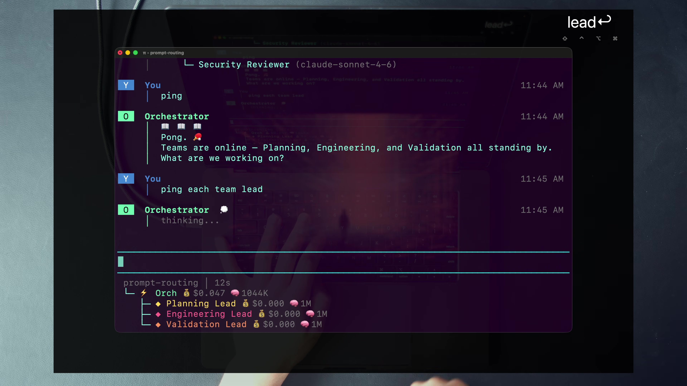
The simplicity is pedagogical. If the first demo were “build an application,” you could attribute the result to a capable model. A ping isolates the route. It asks: who received the user message, who spoke back, and what happened when the system was told to contact the next tier?
4 · Name it — Dan’s term + plain English
The unit is not “many chatbots.” It is a team with an internal leader, specialist members, a routing contract, and a shared conversation. The Orchestrator does not merely broadcast. It decides whether the request is simple enough to answer, belongs to one team, or needs a dependent sequence such as plan → engineer → validate.
The single interface is not cosmetic. It is what turns horizontal specialization into human leverage. Without it, every expert relationship remains a manual operating obligation. With it, adding a specialist is primarily a configuration change and a routing problem for the system.
5 · Worked example — read the shipped roster
multi-team-config.yamlThe default config declares the Orchestrator path, the agent and session directories, two shared context files, and three teams. Every team has a team-name, display color, consult-when description, one lead, and two members. The Engineering team’s routing description owns architecture, implementation, code changes, API design, database schema, and infrastructure. Its members split UI concerns from APIs, databases, jobs, and integrations.
Suppose the user asks, “What should this feature do?” The Orchestrator’s own prompt says to classify and default to one team. The Planning consult-when owns requirements and scoping, so the request routes to Planning Lead. If the user instead asks to implement the accepted feature, Engineering owns it. If the implementation then needs validation, the Orchestrator chains a later call to Validation. The route changes while the user interface does not.
The config also includes shared_context: README.md, CLAUDE.md. That supplies common project orientation without merging all specialists into one generic role. Shared context answers “what system are we in?” Agent files answer “what is my purpose and action boundary?”
6 · You try — route without running
Pass if your route follows the shipped consult-when descriptions and you can explain why a second team is dependent rather than merely interesting.
7 · Common fail + fix
Symptom: the Orchestrator sends everything to everyone, the leads add no synthesis, and the user receives a wall of parallel opinions. The agent count increased, but routing and cognitive load did not improve.
Fix: preserve the hierarchy. The Orchestrator defaults to one relevant team, team leads consult members only when their expertise is useful, and every layer synthesizes rather than relays. Judge the system by whether the user’s interface stays simple while specialization behind it becomes richer.
8 · Current practice overlay
9 · Retrieval check
1. What makes the human the orchestrator in a single-agent workflow?
The human repeatedly classifies work, changes roles, transfers context, sequences phases, and synthesizes answers. The model generates, but the human remains the routing layer.
2. How many agents and teams ship in the default roster?
Ten agents across three teams: one Orchestrator, three team leads, and six specialist workers.
3. What keeps the user’s cognitive load flat as specialists are added?
The single Orchestrator interface. The user talks only to it; the team config and lead hierarchy absorb routing and synthesis.
10 · Teach-back
In two minutes, teach why nine independent specialist chats are not yet a multi-team system. Draw the ten-agent default, point to the narrow waist, and explain what must happen at both synthesis boundaries.
The hierarchy becomes real only when coordination and execution are separated. A lead that can quietly do the worker’s job will eventually bypass the specialist.
1 · Hook — concrete failure
An Engineering Lead receives a repository question. It can read every file, run the shell, edit code, and return an answer, so it does. The response may be fast. Yet the Backend Dev never applies its domain memory, the Frontend Dev never checks interface concerns, and no worker gains experience. The lead has become an expensive generalist with unused specialists beneath it.
Permission abundance creates a behavioral trap: when a coordinator can execute, delegation feels like overhead. The system drifts toward a single smart agent again. Dan’s design makes that shortcut unavailable. A lead is supposed to route, consult, and synthesize. When it steps outside that job, the boundary should be visible.
2 · Picture — three jobs, three action surfaces
| Tier | Course-era model | Primary job | Application-code action |
|---|---|---|---|
| Orchestrator | Opus 4.6 | Classify, create a TillDone list for substantial work, delegate to teams, synthesize | Reads broadly; may update its own expertise, but does not execute application work |
| Team lead | Opus 4.6 | Understand the team question, delegate to members, combine specialist evidence | May update its own mental model; no bash; application work belongs to workers |
| Worker | Sonnet 4.6 | Execute the assigned specialist task precisely inside its domain | Has read/write/edit/bash subject to domain enforcement |
“Leads never execute” means they do not perform the application task. The shipped files still give Orchestrator and leads write/edit so they can maintain their own permitted expertise files; the domain gate denies broader writes. Workers have the shell and application-write surface.
3 · Story — the block that teaches the architecture
Dan asks Engineering to present the important repository files. The Engineering Lead attempts file operations and receives visible red failures. It then states that its tool access is restricted as a lead and delegates to team members with the right tools. Backend Dev reads the codebase and returns the tree. The lead synthesizes. The Orchestrator reports.
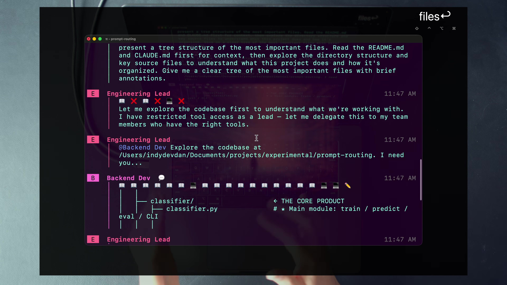
Dan then reveals the full tree with /toggle-workers. All ten agents appear with per-agent cost and model. The tree matters because it proves that the worker was not an invisible mode inside the lead. It was a distinct specialist session with its own model, context, cost, prompt, tools, domain, and memory.
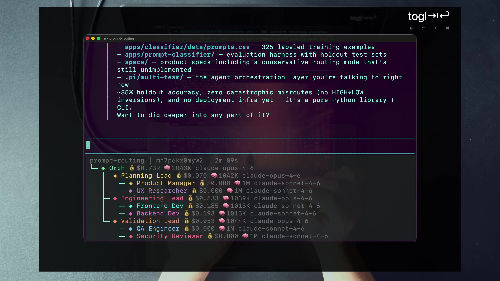
/toggle-workers exposes the full ten-agent roster. Coordination sits on the stronger model tier; execution sits with specialist workers.4 · Name it — depth-2 delegation + zero micro-management
Depth counts delegation edges beneath the user-facing Orchestrator: Orchestrator → lead, then lead → worker. The design deliberately stops there. Workers do not receive another delegate tool. More depth is not automatically more intelligence; it adds latency, context transfer, cost, and places for intent to deform.
The course’s zero-micro-management.md skill states the pattern plainly: leaders read for context, delegate, synthesize, and decide; they do not write application files, edit code, run bash, create directories, or install packages. If they are about to use write, edit, or bash for the task, they stop and delegate.
5 · Worked example — trace the hard depth cap
The runtime uses the same Pi binary for leads and members, so the recursion limit cannot depend on different executables. The lead-delegate.ts extension activates only when the subprocess receives LEAD_MEMBERS_JSON. Before a lead spawns a member, it removes that environment variable. The member process still loads the extension file, but the trigger is absent, so the delegate tool self-disables.
This is a compact structural guard. The lead’s prompt says how to delegate. The environment handshake decides whether the tool exists. A worker cannot decide to become another lead merely because its model believes a subtask would be useful. It must report the need upward, and its lead owns the routing decision.
The Orchestrator and leads also use tilldone differently. The Orchestrator owns the canonical task list and can create, add, and complete work. Leads receive a reduced surface to start and finish assigned items. Workers do not receive TillDone. Tracking authority follows coordination authority.
6 · You try — narrate one cascade
Pass if every tier contributes a distinct job. If the Orchestrator dictates worker steps or the lead performs the task, revise the route.
7 · Common fail + fix
Symptom: the lead’s red X marks look inefficient, so you widen the lead’s domain until it can complete everything directly.
Fix: distinguish a noisy demonstration from the intended steady state. The attempted call exposes a configuration or behavior mismatch; the correct route is delegation. Improve the prompt and skill so the lead delegates earlier, but keep the execution boundary. The specialist’s tools and compounding memory are the reason the team exists.
8 · Current practice overlay
9 · Retrieval check
1. Which tier runs bash and mutates application code?
Workers. Leads and the Orchestrator coordinate and may update their own permitted expertise, but application execution belongs to workers.
2. Why is the lead’s domain block useful?
It prevents the coordinator from bypassing specialists and forces execution toward the worker with the correct tools, domain, and compounding memory.
3. How does the runtime prevent a worker from delegating deeper?
The lead removes LEAD_MEMBERS_JSON before spawning a member. Without that trigger variable, the member’s delegate extension does not register the tool.
10 · Teach-back
Teach a cost-conscious teammate why a lead that cannot directly run the repository task is not “crippled.” Include the specialist-memory argument, the hard depth cap, and the difference between reducing accidental failed calls and deleting the boundary.
A specialist is trustworthy only when its authority is as specialized as its prompt. “You are the frontend expert” is a role; “you may write here and nowhere else” is a boundary.
1 · Hook — concrete failure
A Frontend Dev discovers that the API response does not fit the screen. The fastest apparent repair is to change the backend payload. A Backend Dev simultaneously edits the same contract for performance. Both agents are capable. Both are acting toward the shared goal. The repository now contains a collision created by overlapping authority.
Role prompts alone do not prevent this. A model can interpret “frontend specialist” as “do whatever is necessary to ship the frontend.” The more autonomous the agent, the more likely it is to cross an implicit line when that line blocks the goal. Safe autonomy therefore needs the line to exist outside the model’s argument.
2 · Picture — two locks on one door
Soft lock · prompt
The skill tells leaders what good behavior is: read for context, delegate execution, synthesize results, and stop before writing application code.
Hard lock · runtime
The Pi extension checks allowed tools and per-path read/upsert/delete rules. No matching rule means deny. Prompt persuasion does not widen it.
The two layers solve different problems. The skill helps the model choose the right route before wasting a call. The enforcer preserves the invariant when the model chooses badly. A good system wants both low-friction compliance and a final boundary that does not depend on compliance.
3 · Story — “read the backend, never touch it”
In the video, Dan edits frontend-dev.md so the agent may read the broader apps/ tree but may upsert and delete only under apps/frontend/. The frontend specialist can understand the backend contract, yet the runtime should reject an attempt to modify it. The mirror rule belongs to Backend Dev.
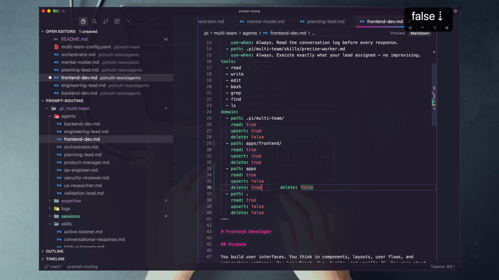
That last sentence matters. In the checked-in repository, frontend-dev.md and backend-dev.md both grant read/upsert/delete on apps/; the frontend file denies root upsert while the backend file permits root upsert. The neat apps/frontend/ versus apps/backend/ split shown on screen is a pattern Dan demonstrates, not the shipped default. The lab applies the pattern deliberately and restores it.
4 · Name it — domain ownership / domain locking
A rule can grant any combination. That lets Planning read application code but write only plans or its mental model; QA and Security can inspect code without modifying it; a specialist can read a neighboring domain to understand a contract while remaining unable to edit it. The shape is more expressive than “read-only” versus “full access.”
5 · Worked example — follow isAllowed
The runtime passes domain rules through AGENT_DOMAIN_RULES. The domain-enforcer.ts extension intercepts tool calls. First, it applies the allowed-tool surface from AGENT_ALLOWED_TOOLS. Then path-bearing operations are checked as reads or upserts. Expertise paths are handled with their declared updatable setting; directory rules are considered; the repository root . receives special handling; and if no rule matches, the answer is deny.
Bash is harder because a shell string can hide writes. The enforcer uses heuristics to detect write and delete patterns rather than assuming that bash is harmless. Per-path guarantees apply to the ordinary file tools. The Bash checks are a coarse secondary guard: they notice common mutation patterns and then ask whether the agent has any upsert or delete permission at all; they do not authorize the target path and are not a sandbox. A critical boundary test must therefore use write or edit, not shell redirection.
After a tool result, the extension re-reads expertise files and checks max-lines. This connects ownership to memory hygiene: an agent may own its mental model, but that ownership remains bounded by whether the file is updatable and how large it may grow.
6 · You try — write a boundary table
Pass if the agent can gather the context it needs while the denied action stays outside its mutation domain. “Can read everything and write everything” is not a domain design.
7 · Common fail + fix
Symptom: the domain block is carefully written in front matter, but no runtime extension consumes it. The team assumes the model will honor the prose.
Fix: trace the entire enforcement path: agent front matter → parsed config → environment rules → extension hook → blocked tool call. Then test one allowed and one denied action. A rule is a boundary only if a violating action cannot cross it.
8 · Current practice overlay
9 · Retrieval check
1. What three permissions can a domain rule grant?
read, upsert, and delete.
2. Name the soft and hard locks.
Soft: prompt-level skills such as zero-micro-management. Hard: per-path/tool checks in the domain-enforcer extension.
3. What happens when no domain rule matches?
The request is denied. The runtime is closed by default.
10 · Teach-back
Teach how a Frontend Dev can understand a backend contract without owning backend mutation. Include the three permissions, no-match-deny behavior, bash heuristics, and why prompt guidance remains useful even with a hard gate.
Specialization gets expensive if every specialist forgets the system at the end of the session. The compounding advantage comes from a narrow role carrying forward a narrow, maintained model of its domain.
1 · Hook — concrete failure
Your Backend Dev studies the API layout, identifies a queueing pattern, learns why a database decision was made, and discovers a scaling risk. The task ends. On the next run, the same role rereads everything and repeats the discovery. The prompt is specialized, but the experience is not cumulative.
Global “remember everything” is not the repair. A single memory stream containing planning debates, frontend conventions, security concerns, and casual chat would make retrieval noisy and ownership unclear. Dan’s pattern is narrower: each agent maintains a personal expertise file focused on what that role should learn.
2 · Picture — a compounding session loop
The file is not an archive of every output. It is a maintained mental model: architecture patterns, decisions, gotchas, open questions, and role-relevant observations. The mental-model skill tells the agent to reference files rather than copy them, omit transient build output, update stale beliefs instead of only appending, keep within the line limit, and validate YAML after writes.
3 · Story — open the shared session
Dan opens a session directory containing conversation.jsonl, per-agent session state, and artifacts such as a benchmark plan and head-to-head results. The conversation log gives everyone recent shared awareness. The personal mental model carries durable role knowledge across sessions. The session workspace holds detailed artifacts that do not belong in chat or expertise.
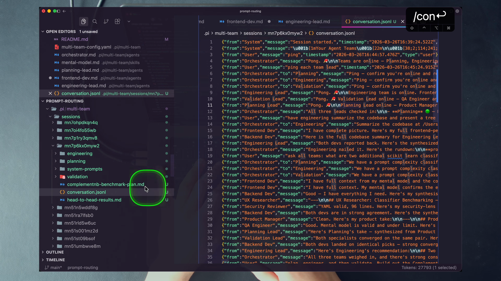
The frame also corrects a common mental model: agents are not private black boxes exchanging only final answers. Every tier can inspect the shared conversation. That prevents needless restatement and lets a specialist notice decisions or disagreements that occurred before it was consulted.
4 · Name it — mental models / agent experts
The course makes memory inspectable. In backend-dev.md, the expertise entry declares a path, a use-when sentence, updatable: true, and max-lines: 10000. That is a memory contract: what file belongs to the agent, when it should matter, whether the agent may change it, and how large it may become.
Read-only expertise is a second pattern. Set updatable: false for a billing workflow, migration procedure, or deployment checklist that the agent should use but never “improve.” Specialized memory can therefore include both evolving experience and fixed doctrine.
5 · Worked example — empty is the correct starting state
All ten expertise files in the checked-in course repo are empty. The video shows a Backend Dev mental model with thousands of tokens, but Dan identifies it as knowledge from a previous codebase that should be removed and retuned. Installation into a new codebase creates empty expertise so the specialists grow knowledge in the correct environment.
This is a critical data-hygiene decision. Preloading a polished mental model from the wrong project would make the agent look experienced while quietly injecting stale architecture, risks, and conventions. Empty expertise is not missing content. It is an honest prior.
After meaningful work, Backend Dev might record the application’s API layer, a key schema decision, a queueing pattern, a scaling observation, and one unresolved question. It should not paste the entire source file, store the full conversation log, or preserve raw test output. Those belong in source, conversation.jsonl, or a session artifact.
6 · You try — curate one durable note
lead-agents repo.Pass if the note would help the next task without becoming a duplicate repository or conversation archive.
7 · Common fail + fix
Symptom: the human edits the mental models after every run, turning persistent expertise into another manual knowledge base to maintain.
Fix: improve the mental-model skill and inspect the results, but let each agent own its file. Use max-lines, YAML validation, domain enforcement, and read-only expertise for the parts that require fixed control. The lesson’s trust move is to teach the maintenance behavior, then let go.
8 · Current practice overlay
9 · Retrieval check
1. What is the shipped state of the ten expertise files?
All are empty. Agents are meant to build codebase-specific mental models over time.
2. What does updatable: false enable?
Read-only expertise: a critical playbook or procedure the agent can consult but cannot modify.
3. What belongs in conversation.jsonl rather than the mental model?
The append-only exchange among the user, Orchestrator, leads, and workers. Expertise keeps curated durable conclusions, not the whole conversation.
10 · Teach-back
Teach a teammate who opens the zero-line expertise files and calls the feature broken. Explain the previous-codebase risk, the session loop, the curation rules, and the difference among conversation log, session artifacts, and mental model.
A useful agent is not a name and a paragraph. Its model, expertise, skills, tools, and domain form one inspectable operating contract.
1 · Hook — concrete failure
You discover that agents respond without reading the latest team decisions. You paste an “always read history” paragraph into all ten prompts. A week later, you refine the behavior in seven files but miss three. The fleet now has three subtly different notions of conversation awareness.
Copying behavior into identities couples every fleet-wide change to every agent file. It also makes the agent definition hard to audit: is concision an identity trait, a reusable response policy, or a user preference? The course extracts repeated behavior into shared Markdown skills with explicit use-when descriptions.
2 · Picture — five dimensions per agent
The Markdown body adds purpose, variables, instructions, team membership, and tool semantics. Front matter answers “what capacity and authority does this agent have?” The prompt body answers “how should this role use them?”
3 · Story — inspect one agent, then one shared skill
Dan opens orchestrator.md and walks through its name, model, expertise, skills, tools, and domain. The recording captures an earlier build whose tool list lacks the later TillDone integration. The shipped file is authoritative: it includes write, edit, read, grep, find, ls, delegate, and tilldone, with writes restricted to the expertise area.
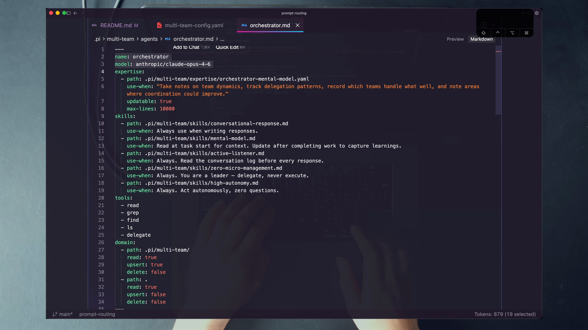
Later, a search for active-listener.md returns ten references in ten agent files. That one skill tells every agent to read the last ten conversation entries, avoid repeating work, and flag conflicts. One behavior module reaches the whole fleet.
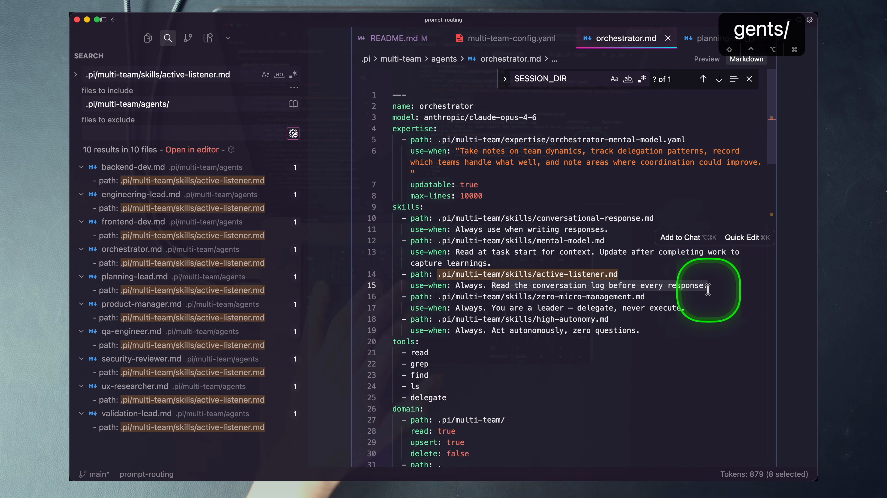
4 · Name it — skills composition
| Skill | Orchestrator | Leads | Workers | Purpose |
|---|---|---|---|---|
| active-listener | Yes | Yes | Yes | Read recent shared conversation before responding |
| mental-model | Yes | Yes | Yes | Read and maintain role expertise |
| zero-micro-management | Yes | Yes | No | Leaders delegate instead of executing |
| conversational-response | Yes | Yes | No | Keep coordinating chat concise; workers stay detailed |
| high-autonomy | Yes | No | No | Let the user-facing coordinator act without routine questions |
| precise-worker | No | No | Yes | Execute the assigned scope exactly; do not improvise or delegate |
5 · Worked example — why workers stay verbose
conversational-response.md optimizes chat bubbles: direct sentences, concise summaries, detailed work written to session files, and references instead of repeated analysis. That behavior fits the Orchestrator and leads because their product is a synthesis the next layer can absorb.
Workers deliberately do not receive it. Their product may be a detailed implementation analysis, exact vulnerability list, or comprehensive execution result for a lead to synthesize. If workers compress too aggressively, the lead loses evidence. The fleet therefore shares active listening and mental-model maintenance while varying response shape by role.
This is the subtle power of composition: you can change one line in an agent file to remove a skill from a role that should work independently, or update one skill file to retune all attached roles. The distribution is explicit and inspectable rather than implied by inheritance.
6 · You try — audit one of each tier
orchestrator.md, planning-lead.md, and backend-dev.md.Pass if you can explain why the differences form an architecture rather than three arbitrary prompt styles.
7 · Common fail + fix
Symptom: every agent receives every “good” skill. Workers become concise leaders, leads become precise executors, and no one can explain which behavior belongs to which tier.
Fix: distribute behavior by job. Ask what failure a skill prevents and at which tier that failure exists. Then verify the agent’s tools and domain support the behavior. A no-micromanagement skill on a worker without delegate would be incoherent.
8 · Current practice overlay
9 · Retrieval check
1. Which skill appears on all ten agents?
active-listener; all agents read the recent conversation before responding.
2. Why is conversational-response withheld from workers?
Workers should return detailed specialist evidence to leads; concise chat synthesis belongs to the coordinating tiers.
3. Name the five front-matter dimensions taught here.
Model, expertise, skills, tools, and domain.
10 · Teach-back
Teach the skill matrix without looking. Use conversational-response and zero-micro-management to prove that composition preserves tier differences rather than merely reducing duplication.
A team architecture becomes scalable when adding, removing, or duplicating a team is configuration—not a rewrite of the chat system.
1 · Hook — concrete failure
You want to remove Validation for a cheap planning run. The chat UI assumes three columns. The Orchestrator prompt names all three teams. Routing logic contains a switch statement. Footer colors are embedded in rendering code. Removing one team means editing five modules, and adding DevOps requires another application release.
The agents may be configurable, but the organization is not. That makes every experiment expensive and encourages one permanent “do everything” roster. Dan’s system loads the organization from a YAML file at launch so the runtime can render and route whichever team tree is declared.
2 · Picture — roster here, anatomy there
multi-team-config.yamlconsult-whenagents/*.mdThe distinction prevents a frequent error: the YAML is the organization chart, not the whole agent. The roster says which prompt file fills a seat. The prompt file defines the seat’s operating contract.
3 · Story — kill, edit, relaunch
Dan shows that the visible organization changes when the configuration changes. Remove the Validation block, restart, and the chat room now contains Planning and Engineering. Add a DevOps team by following the same lead/member pattern, and the Orchestrator receives its routing description at startup. The next launch picks up the new organization.
The shipped repository makes the idea testable with five presets. The default provides three balanced teams. Engineering-only strips the system to one execution team. Planning + Engineering removes Validation. Plan-and-scale keeps Planning and creates three Engineering teams. The open-source configuration demonstrates model overrides across providers.
just teamPlanning + Engineering + Validationjust team-engEngineering onlyjust team-pePlanning + Engineeringjust team-scalePlanning + 3× Engineeringjust team-ossMulti-provider roster4 · Name it — configuration-driven harness
This is horizontal leverage. You can duplicate Engineering teams for scale without duplicating the agent definitions. You can point two seats at the same prompt for a drill, then later replace them with purpose-built agents. You can reduce cost by selecting only the teams a workflow needs.
Configuration does not make every organization good. A copied DevOps label pointing at Backend Dev is enough to prove the mechanism, not enough to create a DevOps expert. Real specialization still requires a distinct purpose, tools, skills, domain, and expertise.
5 · Worked example — add a bounded DevOps drill
Copy multi-team-config.yaml to a temporary course-repo config. Add a team named DevOps, give it a distinct color and a consult-when sentence about deployment or infrastructure, and point the lead/member seats at existing engineering-lead.md and backend-dev.md. Launch with just teamc <your-config>.
When you ask a small deployment-oriented question, the visible pass condition is structural: DevOps appears in the tree and the Orchestrator can select it. The exercise does not prove that Backend Dev has become a high-quality DevOps expert. It proves that team count, names, routing hints, and seat paths are data.
A production next step would create new agent files, narrow their tools and domains, assign deployment expertise, and sharpen consult-when. Keep mechanism verification and specialization quality as separate grades.
6 · You try — predict five trees
justfile recipes.Pass if your predicted tree matches the config before you pay to launch it.
7 · Common fail + fix
Symptom: you copy the Engineering team three times and claim the system now has three different engineering perspectives, even though all seats point to the same definitions and memories.
Fix: say precisely what changed. A replicated team increases capacity and creates separate sessions; it does not automatically create diversity. Distinct expertise, prompts, models, tools, or domains are needed when the goal is distinct judgment rather than throughput.
8 · Current practice overlay
9 · Retrieval check
1. Where does an agent’s domain live?
In the agent Markdown file’s front matter, not in multi-team-config.yaml.
2. Which preset proves horizontal team scaling?
just team-scale, backed by plan-and-scale-engineering-config.yaml, launches Planning plus three Engineering teams.
3. What does the team YAML primarily own?
The roster and routing/display structure: Orchestrator path, teams, leads, members, colors, shared context, sessions path, and consult-when descriptions, plus optional model overrides.
10 · Teach-back
Teach where to change a team name, a routing hint, a default model, a model override, a skill, and a domain. Your listener should be able to point each change to YAML or agent front matter without guessing.
The system deliberately spends more calls than a single-agent chat. The engineering question is not “Can I minimize tokens?” It is “Which intelligence belongs at each decision point, what value did it deliver, and did I measure the real spend?”
1 · Hook — concrete failure
You avoid lead calls, specialist reviews, and persistent context to keep the API footer small. Then you spend an hour rebuilding the plan, catching a regression, and asking the same agent to reconsider security. The model bill is low because the human absorbed the missing coordination.
The opposite failure is uncontrolled fan-out: every prompt goes to every team on the strongest model whether or not the perspectives are needed. Dan’s “spend to win” stance is not a license to ignore routing or accounting. The codebase tiers models, defaults to one team, and exposes per-agent cost so spending remains an engineering decision.
2 · Picture — coordination gets the strongest tier
Orchestrator + leads · Opus 4.6 in the course. They interpret ambiguous goals, choose routes, preserve dependencies, reconcile specialist evidence, and compress it into the next decision.
Workers · Sonnet 4.6 in the course. They receive a narrower assignment, use tools, and execute precisely inside a bounded specialist domain.
The model names are recording-era detail. The placement rule is the transferable idea: use your strongest available reasoning where mistakes in classification, dependency order, and synthesis would corrupt all downstream work; use a capable execution tier where scope is already narrow.
3 · Story — value first, footer second
The video’s target project is a separate scikit-learn prompt-complexity classifier. Its purpose is to label a prompt LOW, MID, or HIGH so a request can route to an appropriate model rather than paying for intelligence it does not need. Running just predict "summarize this codebase" returns MID with confidences high 0.35, low 0.19, mid 0.45 and routes to the course-era Sonnet model.
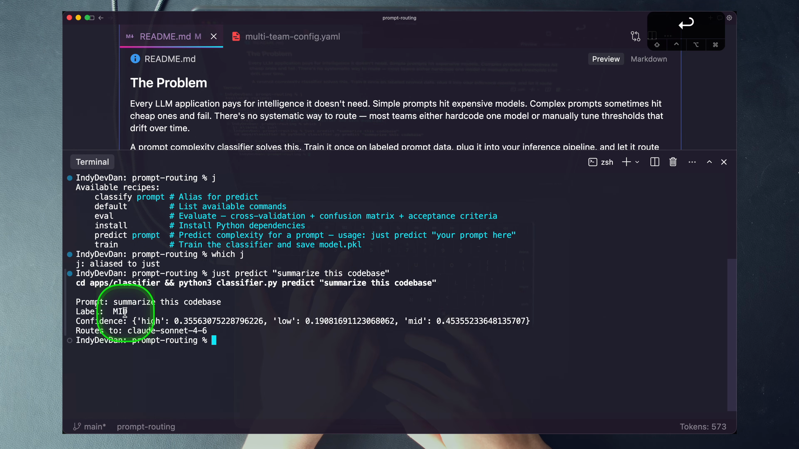
The teams propose classifiers, plan a benchmark, engineer the comparison, and validate the result. In the recorded head-to-head, Logistic Regression performs better on LOW, ComplementNB performs better on MID, and both are perfect on HIGH; the synthesis keeps Logistic Regression as the default and names ComplementNB a credible challenger. The footer shows roughly $8.28 for the full run.
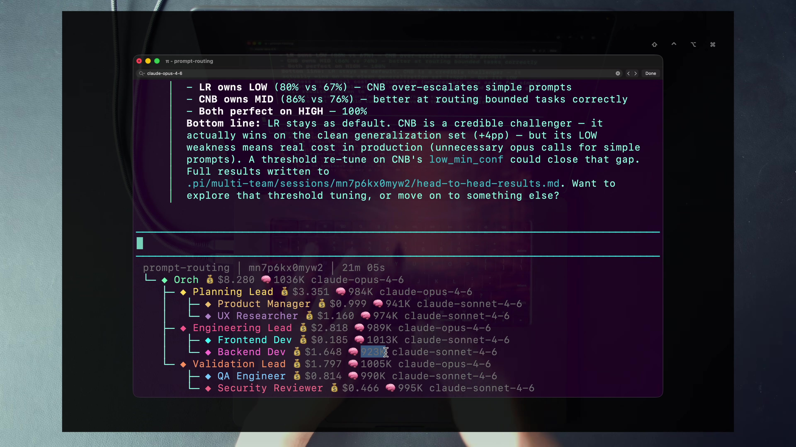
4 · Name it — model tiering + spend to win
Dan’s future-facing argument is that models improve, token cost falls, and intelligence per token rises. The engineer who practices using specialized compute before it is obvious builds the orchestration skill early. The mindset shift is from treating every token as waste to asking whether compute is buying trustworthy leverage.
That claim does not remove local constraints. A student may not have budget for a scaled run. The architecture still teaches how to route only relevant teams, choose a cheaper worker tier, use presets, keep prompts small, and inspect costs. “Spend more” is a strategic posture, not a requirement to run every expensive variant.
5 · Worked example — account for hidden worker cost
The repository includes specs/fix-worker-cost-tracking.md, a real defect report. In the documented case, the TUI showed $8.79 while the API dashboard showed $34.28—about a quarter of the real spend. Worker costs were being dropped across layers. The fix had to propagate costs from member subprocesses through leads into the parent footer.
This is a valuable tension. The lesson advocates using more tokens, and the codebase preserves evidence that the cost display once under-reported them. A trustworthy system must do both: allocate compute aggressively where it creates leverage and maintain accounting accurate enough to judge that allocation.
For a live run, record the visible tree, the per-agent model, the total before and after the task, the artifact or decision produced, and any external billing cross-check available to you. Cost without value is incomplete; value without cost is unauditable.
6 · You try — design a tiered route
Pass if your model placement follows responsibility rather than prestige and if you can say which call you would remove when budget is tight.
7 · Common fail + fix
Symptom: you compare a multi-team footer only with one single-agent call and ignore the human routing, re-prompting, validation, and correction the cheaper run requires.
Fix: compare complete workflows. Record compute cost, elapsed time, human interventions, evidence quality, and rework. Then route surgically. A multi-team system should earn its cost by reducing coordination burden or improving trust—not by displaying more agents.
8 · Current practice overlay
9 · Retrieval check
1. Where does the course put Opus and Sonnet?
Opus on the Orchestrator and leads; Sonnet on workers. The strings are period detail, but stronger coordination and capable bounded execution is the principle.
2. What is Dan’s answer to “this is expensive”?
Do not optimize only for today’s token price. Intelligence per token rises and costs fall; learn to spend compute on leverage instead of preserving the old human-heavy workflow.
3. What does the worker-cost bug teach?
Spend-to-win still requires accurate accounting. Member cost must propagate through leads to the parent total and should be cross-checked when the meter looks implausible.
10 · Teach-back
Teach the complete economic case using the classifier result, the tiering rule, and the cost-tracking defect. Your argument must include both value and measurement.
More perspectives help only when the team receives a consistent question, can see the shared history, returns inspectable evidence, and preserves disagreement for synthesis.
1 · Hook — concrete failure
You ask Planning about product value, Engineering about implementation, and Validation about risk—but paraphrase the task differently each time. The teams disagree. You cannot tell whether the disagreement is expertise or prompt drift. Later, QA repeats a concern Security already resolved because neither can see the prior exchange.
Multi-perspective work needs a shared referent. Dan’s chat room logs the full conversation and can send one user intent through the Orchestrator to all teams with domain-tailored framing. Specialists bring different objectives while remaining anchored to the same thread.
2 · Picture — one question, three lenses, one synthesis
The Orchestrator’s job is not to erase differences. It must keep the shared question stable enough that differences can be attributed to domain perspective, then compress them into an actionable answer.
3 · Story — ask all teams, then validate
Dan asks all teams to propose two additional scikit-learn classifiers. The Orchestrator sends the request to Planning, Engineering, and Validation with domain-specific concerns. Planning considers goals and latency, Engineering considers training and inference behavior, and Validation considers testability and regressions. The recommendations overlap but are not identical.
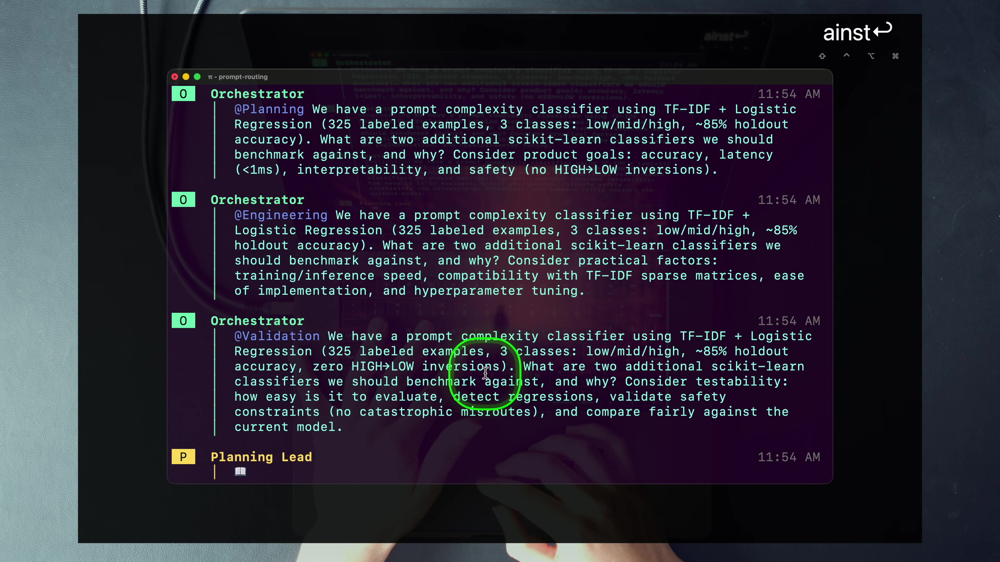
Later, the Validation Lead consults QA and Security. Security returns a structured review and “Ship it. No blocking issues,” while QA contributes additional findings. Dan emphasizes that different agents with different contexts find different things. The value is not a ceremonial approval stage; it is independent specialist attention before the system declares completion.
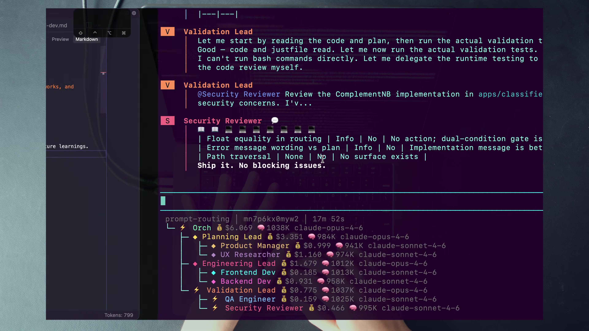
4 · Name it — conversation awareness + trust then scale
Trust here is not optimism. It comes from role specialization, domain boundaries, visible routing, persistent expertise, cost tracking, task tracking, validation, and logs. Each mechanism converts a reason to hover over the agents into evidence you can inspect afterward.
Scale comes second because a larger untrusted team amplifies uncertainty. Three Engineering teams with vague ownership are not a stronger system. Three teams with clear domains, task boundaries, and evidence may increase capacity while preserving control.
5 · Worked example — audit one answer end to end
Start with the Orchestrator’s final claim. Open .pi/multi-team/sessions/<session-id>/conversation.jsonl. Find the user message, Orchestrator delegation, lead message, member response, lead synthesis, and final answer. The rows carry fields such as from, message, to, type, and timestamps. The active-listener skill instructs every agent to read the latest entries before responding.
Then inspect any session artifact named in chat. If a benchmark plan or result was written, the artifact should support the synthesis. If the final answer claims Security reviewed the change, locate the Security Reviewer’s response. If a team was not consulted, the absence should match the Orchestrator’s routing rationale rather than disappear into an opaque system.
This audit creates a learning loop. You can diagnose whether a weak outcome began with routing, lead synthesis, worker evidence, shared context, or final compression. Trust grows because failures become attributable and repairable.
6 · You try — design an evidence chain
Pass if a reviewer could distinguish a routing failure from a specialist disagreement using only your expected evidence.
7 · Common fail + fix
Symptom: you enable high autonomy, stop inspecting runs, and call the absence of supervision trust.
Fix: replace continuous babysitting with inspectable contracts and sampled audits. Verify domains, team routes, task state, logs, artifacts, validation evidence, and cost. Trust is the earned ability to review at the right level, not the decision to discard evidence.
8 · Current practice overlay
9 · Retrieval check
1. What file makes the whole team exchange observable?
conversation.jsonl inside the session directory.
2. Which skill consumes recent shared history?
active-listener, shared by all ten agents.
3. What are Dan’s two moves for 2026, in order?
Trust first, then scale.
10 · Teach-back
Teach why a Security Reviewer’s “ship it” is useful only when you can identify the prompt, specialist session, review content, lead synthesis, and final claim. End by explaining why scale belongs after that evidence path works.
The team tree is not a metaphor layered over one conversation. The runtime spawns persistent Pi subprocesses, injects role-specific prompts and boundaries, streams JSON, and reconstructs the result inside a replaced chat interface.
1 · Hook — concrete failure
A UI draws ten avatars and animated arrows. The product claims hierarchical delegation. Underneath, one model call changes a “role” string and produces all responses serially. The visual may still be useful, but claims about independent sessions, model tiers, memory, tool boundaries, and cost cannot be inferred from the animation.
Dan’s lesson invites source-level inspection. The course repo contains the chat extension, delegation extension, domain enforcer, task extension, configuration loader, prompt renderer, subprocess runner, logs, themes, specs, and agent definitions. The runtime claim can be traced.
2 · Picture — one request at runtime resolution
multi-team-chat.tsOwns input, bubbles, tree, footer, costs, and task display.delegate()Selects one team, a list, or all and streams lead output.pi --mode json -pSame binary, role-specific model/prompt/session.domain · lead · tilldoneExtensions activate only when trigger environment exists.*.jsonlPersistent agent session, shared conversation, artifacts, and costs.The uniform binary is elegant: a lead and a worker do not need separate agent engines. Their injected prompt, enabled tools, environment variables, domains, models, and sessions make them different operational roles.
3 · Story — replace the display, keep the brain
multi-team-chat.ts does not merely apply a theme. During session start, it replaces Pi’s display child with a custom chat view and blanks adjacent display regions. The underlying agent runtime remains, while the user experiences a purpose-built multi-team room with colored speakers, live delegation, worker toggles, task progress, context, and cost.
When a delegation begins, callAgent() launches Pi in JSON mode with prompts, themes, and ordinary extensions disabled, then explicitly loads the domain, lead-delegate, and TillDone extensions. The first run supplies the system prompt and model; later runs resume the persisted session file. JSON streaming lets the parent update the visible chat bubble while work is happening.
The Orchestrator’s delegate tool accepts a team name, a list, or all. A list can be settled with Promise.allSettled, so one target failing does not erase all results. The user sees one control plane over several real subprocess conversations.
4 · Name it — customizable agentic harness
The lesson’s “beyond Claude Code” language refers to this degree of customization in the demonstrated system. It does not mean the architecture’s ideas belong only to Pi. It means the implementation requires surfaces below an ordinary chat prompt: a place to enforce domains, cap delegation, inject runtime variables, and replace the interface.
The system prompt is templated with {{SESSION_DIR}}, {{CONVERSATION_LOG}}, team/member blocks, expertise blocks, and skill blocks. The agent definition remains readable source; the loader resolves the current runtime facts into it.
5 · Worked example — do not conflate two orchestration layers
delegate and tilldone custom tools; Pi subprocesses; domain, lead, and task extensions; custom chat UI; persistent JSONL sessions.
.claude/commands/, the meta Pi agent, and Task-style orchestration in planning/spec materials install, extend, and deploy the system.
The README calls Claude Code the bootloader. /install checks prerequisites, verifies the environment, installs dependencies, validates agents/config, and adds a launch alias. /install-into-codebase deploys fresh teams and empty expertise into another project. Once launched, the chat-room hierarchy is the Pi runtime—not a hidden Claude Code Task tree.
This distinction matters in debugging. If a worker cannot write a path, inspect the Pi domain rules and runtime environment. If installation fails to copy agent definitions, inspect the build command. Mixing the two layers sends diagnosis to the wrong mechanism.
6 · You try — trace three environment gates
AGENT_DOMAIN_RULES to domain enforcement.LEAD_MEMBERS_JSON to the lead delegate tool and explain why workers lose it.TILLDONE_TASKS to shared task state.Pass if you can explain the recursion cap without saying “the worker model knows not to delegate.”
7 · Common fail + fix
Symptom: a colored bubble is treated as proof of a distinct model, memory, or permission boundary.
Fix: triangulate. Read the agent file and team config, inspect the subprocess/session code, and verify a runtime artifact such as the JSONL log, per-agent session file, model in the tree, or a blocked tool call. Promise, implementation, and evidence should agree.
8 · Current practice overlay
9 · Retrieval check
1. What runs each lead and worker?
The same Pi binary as a JSON-mode subprocess, with role-specific prompt, model, tools, environment, and persistent session.
2. What makes the custom UI a “nuclear” pattern?
The extension replaces Pi’s display layer with its own chat view while retaining the underlying agent runtime.
3. State the two orchestration layers without conflating them.
Pi runs the multi-team chat with delegate/tilldone and subprocesses. Claude Code commands and Task-style tooling install, build, and extend that runtime.
10 · Teach-back
Begin at the custom chat input and end at the resumed worker session. Include tool registration, subprocess flags at a high level, the three conditional extensions, prompt variable injection, JSON streaming, and the return synthesis.
The chapter is offline-first and complete without video. These two optional companions are the only YouTube overlays used: both come from the lesson’s own resource list and address named gaps rather than repeating the lesson.
Harness comparison · optional
Use this beside the runtime section to deepen the “customizable harness” claim: prompts are only one layer; hooks, tools, UI, and runtime control determine which architecture can be implemented.
Prerequisite · optional
Use this beside memory and model spend. It is the immediately preceding lesson’s foundation for large context, specialized agent teams, and moving human attention up the stack.
The course repository is the tool. You will run it against its own source, observe the three tiers, inspect the agent contracts, reconfigure the roster, trigger a hard domain block, and prove conversation awareness from the session log. The separate classifier shown in the video is not part of this lab.
agentic-horizon-extras/lead-agents. Do not recreate the prompt-routing classifier or substitute another repository.rm commands. Use copied config files for roster experiments. For the one required agent-file edit, save the original diff and restore it before finishing.A score of 80/100 is necessary but not sufficient. You must pass the three-tier block/delegate checkpoint, one roster reconfiguration, the out-of-domain write block, and the conversation-log audit. Missing any one leaves the lab incomplete.
agentic-horizon-extras/lead-agents, verify Claude Code, Pi, Bun, Node.js, and Just. The shipped team* recipes call pi directly; make sure that command resolves..env from .env.sample and set ANTHROPIC_API_KEY. The configuration loader throws if .env is absent. Add other provider keys only if you choose the optional multi-provider drill./install inside Claude Code or just install. The install flow checks prerequisites and the environment, installs dependencies, validates config/agent paths, and offers the teams alias..pi/multi-team/agents/orchestrator.md. Say its domain aloud: read all; write within the expertise area; no application-code execution.just team-list to inspect available configurations without starting the full workflow.just team and wait until the chat room is ready.ping.ping each team lead. Record the Orchestrator → three-lead fan-out and the changed footer total.have engineering present a tree structure of the most important files in this repo./toggle-workers.ask all teams: what is the single biggest risk in this codebase's architecture, and why?orchestrator.md, planning-lead.md, and backend-dev.md front matter.multi-team-config.yaml, skills/zero-micro-management.md, and skills/active-listener.md.write/edit on a lead does not mean broad application-write authority.active-listener.md and verify that conversational-response.md is absent from workers..pi/multi-team/sessions/<session-id>/.conversation.jsonl.active-listener.md.from, message, and message-type/routing fields actually present.just team-pe to prune Validation, or copy the default config and add a DevOps team that reuses existing agent files for this mechanism drill.just teamc <copied-config>.Pass: the launched roster matches the edited/preset YAML. If you added DevOps with reused prompts, you explicitly label it a roster proof rather than a completed specialist design.
.pi/multi-team/agents/frontend-dev.md.apps/frontend/ permits read/upsert/delete while the rest of apps/ is read-only, matching the lesson pattern.write or edit file tool—not Bash or shell redirection—to create a harmless test file outside apps/frontend/.frontend-dev.md exactly and verify no test artifact remains.Pass: the out-of-domain write/edit call is structurally blocked, the edit is restored, and your explanation names both the soft skill and hard enforcer. A prompt-only refusal or Bash-only attempt earns no critical pass because the shell heuristic does not prove target-path authorization.
Use a copied config to override one agent model, or run just team-oss only if the necessary provider keys are configured. Pass when the visible tree shows the override rather than the agent file’s default.
Add a small second expertise file to one worker with updatable: false. Confirm the agent can read it but cannot modify it. Restore the agent file and remove the drill file afterward.
Run just team-scale with a trivial prompt and watch cost carefully. Pass when Planning plus Engineering1/2/3 appear as distinct teams. Do not claim distinct expertise unless their definitions or learned state differ.
Use just metacc or just metapi to scaffold a purpose-built agent and wire it into a copied config. This exercises the build harness, which is distinct from the Pi multi-team runtime.
| Observation | Likely mechanism | Repair |
|---|---|---|
| Ghost or duplicate messages during retest | A live Pi/tmux session was reused | Fully kill and recreate the session; wait for idle before the next prompt. |
| Launch dies before chat appears | Missing .env or ANTHROPIC_API_KEY | Create the environment from .env.sample; never paste the key into lab evidence. |
| Fatal error names an agent path | Config points to a missing or renamed Markdown file | Correct the copied config path or restore the shipped file. |
| Worker write does not happen | domain-enforcer rejected path/tool access | Inspect that agent’s domain. Do not widen it until you can state the intended ownership. |
| Lead tries to write application code | Coordinator behavior drift | Keep the hard boundary; inspect zero-micro-management and route to a worker. |
| Footer cost looks implausibly low | Worker-cost propagation defect in an older build | Read specs/fix-worker-cost-tracking.md and cross-check external billing if available. |
team-oss provider fails | Missing provider credential | Configure the matching key or use the default Anthropic roster. |
| Expertise warning after a write | File exceeds max-lines or invalid YAML | Condense durable entries and validate YAML as the mental-model skill requires. |
| Evidence | Full | Partial | Missing |
|---|---|---|---|
| Setup and permissions audit | 5 | 2 | 0 |
| Orchestrator-only ping | 10 | 5 | 0 |
| Lead block → worker execution | 15 | 7 | 0 |
| Ten-agent model/cost tree | 10 | 5 | 0 |
| Three-team perspective synthesis | 10 | 5 | 0 |
| Source anatomy audit | 15 | 8 | 0 |
| Conversation-log audit | 10 | 5 | 0 |
| Roster reconfiguration | 10 | 5 | 0 |
| Hard domain-block experiment + restore | 15 | 7 | 0 |
conversation.jsonl.Close the chapter. Draw the architecture and answer on paper. Reveal only after committing to an answer. A correct phrase without a runtime implication earns half credit.
1. Draw the three tiers and state each job.
User → Orchestrator → team leads → workers. The Orchestrator is the only user interface and classifies/routes/synthesizes. Leads coordinate and delegate within a team. Workers execute bounded specialist tasks.
2. Why is the architecture called depth-2 delegation?
There are two delegation edges beneath the user-facing Orchestrator: Orchestrator to lead, then lead to worker. Workers cannot delegate further.
3. What keeps cognitive load flat as workers are added?
The single Orchestrator interface plus synthesis at both hierarchy boundaries.
4. Reconstruct the shipped default roster.
One Orchestrator; Planning Lead with Product Manager and UX Researcher; Engineering Lead with Frontend Dev and Backend Dev; Validation Lead with QA Engineer and Security Reviewer.
5. A lead has write in its tool list. Why should it still not edit application code?
The tool is narrowed by domain to its permitted expertise file or area. The zero-micro-management skill routes application execution to workers, and the hard domain gate blocks broader writes.
6. State the soft lock, hard lock, and default rule.
Soft lock: behavioral skills such as zero micro-management. Hard lock: the domain-enforcer tool and path checks. If no domain rule matches, deny.
7. Why are the shipped expertise files empty?
They are intended to grow from the installed codebase. Carrying a rich model from a previous project would inject stale knowledge.
8. Distinguish shared conversation, session artifact, and mental model.
conversation.jsonl records the team exchange; session artifacts hold detailed work products; a mental model is a curated, durable, role-specific expertise file maintained across sessions.
9. Where do roster/consult-when and model/tools/skills/domain live?
Roster and routing hints live in the team YAML. Default model, tools, skills, expertise, and domain live in each agent Markdown front matter; a team config may override a seat’s model.
10. Which skill is universal, and which response skill is withheld from workers?
active-listener is universal. conversational-response is withheld so workers can return detailed evidence to concise leads.
11. What actually runs a worker, and what prevents deeper delegation?
A Pi JSON-mode subprocess with a persistent session. The lead removes LEAD_MEMBERS_JSON before spawning it, so the delegate extension does not enable another delegation layer.
12. Separate the Pi runtime from the Claude Code build harness.
Pi runs the custom chat, tools, extensions, and agent subprocesses. Claude Code commands and meta tooling install, deploy, and help build the system.
13. Why is sending every request to every team a design failure?
It discards routing, increases cost and latency, and returns unnecessary perspectives. The Orchestrator should default to one relevant team and fan out only when domains genuinely contribute.
14. What survives model-name drift?
Tier intelligence by responsibility: strongest available reasoning at coordination and synthesis points and a capable execution tier for bounded worker tasks, with config overrides and measured outcomes.
15. Why must trust precede scale?
Scale amplifies whatever the system already does. Specialization, domains, logs, costs, task state, and validation must make outcomes inspectable before more teams increase capacity.
16. Resolve “spend to win” in one careful sentence.
Purchase the specialist context and coordination that displace scarce human work when the evidence justifies it, while routing surgically and measuring complete cost rather than treating tokens as inherently wasteful or free.
Without notes, teach a colleague for seven minutes:
Expert pass: your listener can predict the effect of removing active-listener, widening Frontend Dev to all of apps/, overriding one model in config, or leaking LEAD_MEMBERS_JSON into a worker.
Use these terms narrowly. Each definition points to a behavior or source surface in the course repository.
updatable: false, used for doctrine or procedures the agent may consult but not change.conversation.jsonl entries before every response to avoid repetition and surface conflicts..claude/; distinct from the Pi runtime it sets up.Course code deep-dive · inspect the shipped lead-agent repository →